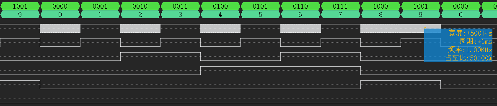

本文最后更新于：7 个月前
1 前言
本次FPGA课设的题目需要三选二，内容都差不多，都是有关定时器的应用。其中我负责写第三题，以下是基础部分题目要求：主要就是三个功能：
另外虽然课设没有要求，不过课上教的是VHDL，期末考也多半是，所以用的是VHDL语言。
主要设计思路如下：
时钟源部分，首先列举出来整个系统可能需要用到的时钟频率，编写一个模块为整个系统提供时钟
正常计时部分，使用24/60进制的计时器，输出各自的个位与十位给显示模块
显示模块根据板载数码管电路编写具体模块，先编写点亮一个管的模块，再编写扫描模块
校时功能，利用二选一模块，根据指定按键电平高低，切换提供给时/分计时器的时钟是正常时钟源还是校时时钟源（倍速时钟源）
整点报时功能，根据当前正常计时器的输出，判断是否要报时，也就是是否要将鸣叫频率给蜂鸣器
扩展部分预计实现功能：
设置一个按键，用于使数码管切换显示正常计时界面和闹钟界面
除了正常计时部分，编写另外一个界面，用于设置闹钟时间
三个校时按键进行复用，除了调整正常计时部分的时间以外，也可以用来设置闹钟
当正常计时达到所设置的闹钟时间之后，蜂鸣器播放闹铃
下面将开始逐步介绍设计过程，由于扩展部分的加入，因此完整的顶层文件设计过程将在扩展部分中进行记录。
2 设计过程
2.1 开发环境与硬件资源
本次课设开发环境与硬件平台介绍如下：
IDE：Quartus Ⅱ 13.1
编辑器：vscode
硬件平台：黑金 AX301 开发板
主控：ALTERA 公司 Cyclone IV 系列的 EP4CE6F17C8
烧录接口：USB-Blaster JTAG 接口
开发语言：VHDL
波形测试工具：逻辑分析仪
下面是本次课设将会使用到的硬件外设记录：
按键
数码管
蜂鸣器
外引调试引脚
2.2 基础部分模块设计过程
2.2.1 分频器：
分频器负责将原始频率分为整个系统所需要的所有时钟频率。
根据设想，整个系统所需要的频率有：
正常计时频率：1Hz
校时计时频率：10Hz
秒报时蜂鸣器频率：500Hz
点报时蜂鸣器频率：1kHz
2.2.1.1 代码实现
原理为提前定义好各个频率所需常数，每隔N个原始时钟周期后，将输出的时钟信号翻转一次，从而得到各个系统所需的时钟频率。
代码实现摘录如下：
1 2 3 4 5 6 7 8 9 10 11 entity diver is port in std_logic ; out std_logic ; out std_logic ; out std_logic ; out std_logic end diver;
1 2 3 4 5 6 7 8 9 10 11 12 13 14 15 16 17 18 19 20 21 22 23 24 25 26 27 28 29 30 31 32 33 34 35 36 37 38 39 40 41 42 43 44 45 46 47 48 49 50 51 architecture bhv of diver is signal m_clk0 : std_logic ; signal m_clk1 : std_logic ; signal m_clk_os : std_logic ; signal m_clk_ot : std_logic ; constant c_cnt_0 : integer := 25000000 ; constant c_cnt_1 : integer := 2500000 ; constant c_cnt_os : integer := 50000 ; constant c_cnt_ot : integer := 25000 ; begin process (clk)variable cnt_0 : integer range 0 to c_cnt_0;variable cnt_1 : integer range 0 to c_cnt_1;variable cnt_os : integer range 0 to c_cnt_os;variable cnt_ot : integer range 0 to c_cnt_ot;begin if (clk'event and clk = '1' ) then 1 ;1 ;1 ;1 ;if (cnt_0 = c_cnt_0) then 0 ;not m_clk0; end if ;if (cnt_1 = c_cnt_1) then 0 ;not m_clk1;end if ;if (cnt_os = c_cnt_os) then 0 ;not m_clk_os;end if ;if (cnt_ot = c_cnt_ot) then 0 ;not m_clk_ot;end if ;end if ;end process ;end bhv;
2.2.1.2 实际测试波形
根据实际测量波形可知，原始时钟经过分频产生了四种预期中的频率信号，成功验证代码。
2.2.2 计数器模块
用于实现正常时钟的计数器，本质为24/60进制计数器。
2.2.2.1 代码实现
由所需实现的功能可知，本次需要编写的计数器为异步清零和同步使能的加法计数器。正常情况下，秒计数器的时钟源由正常计数时钟（1Hz）提供，分钟和小时计数器的时钟源由上一位的进位信号提供。
代码实现摘录如下，以秒计时器为例：
1 2 3 4 5 6 7 8 9 entity count_60_sec is port in std_logic ;out std_logic_vector (3 downto 0 );out std_logic end count_60_sec;
1 2 3 4 5 6 7 8 9 10 11 12 13 14 15 16 17 18 19 20 21 22 23 24 25 26 27 28 29 30 31 32 33 34 35 36 37 38 39 40 41 architecture a of count_60_sec is signal m_clk : std_logic ;signal num0, num1 : std_logic_vector (3 downto 0 ); begin '1' when (num0 = "1001" and num1 = "0101" and en = '1' ) else '0' ; process (rst, clk)begin if (rst = '0' ) then "0000" ;"0000" ;elsif (m_clk'event and m_clk = '0' ) then if (en = '1' ) then if (num0 = "1001" ) then "0000" ;if (num1 = "0101" ) then "0000" ;else 1 ;end if ;else 1 ;end if ;end if ;end if ;end process ;end a;
2.2.2.2 实际测试波形
根据实际测量波形可知，以秒计时器为例，从图中可以看出模块输出为60进制加法器，成功验证代码。
2.2.3 校时模块
由题目可知，需要分配两个按键出来为分钟和小时位提供校时功能，也就是当按下按键之后，对应的计数器时钟源切换为频率较快的（10Hz）频率源，从而快速调整对应位的计数。因此可以编写二选一选择器以实现这个功能，由位选信号，也就是按键信号，来选择提供给计数器的时钟源。
2.2.3.1 代码实现
二选一选择器代码实现摘录如下：
1 2 3 4 5 6 7 8 entity mux21a is port in std_logic ;out std_logic end mux21a;
1 2 3 4 5 6 7 8 9 10 11 12 13 14 architecture behav of mux21a is begin process (a, b, s)begin if s = '0' then else end if ;end process ;end behav;
2.2.3.2 实际测试波形
根据实际测量波形可知，以分计数器为例，正常情况下，时钟信号为来自秒计数器的进位信号，当按下按键的时候，时钟信号切换为10Hz，成功验证代码。
2.2.4 整点报时模块
检测到分达到59时，秒达到50、54、56、58时，向蜂鸣器输出500Hz的信号，检测分和秒都达到59的时候，向蜂鸣器输出1kHz的信号。
2.2.4.1 代码实现
代码实现摘录如下：
1 2 3 4 5 6 7 8 9 10 entity alarm is port in std_logic_vector (3 downto 0 ); in std_logic ; in std_logic ; out std_logic end alarm;
1 2 3 4 5 6 7 8 9 10 11 12 13 14 architecture behav of alarm is begin process (min1, min0, sec1, sec0)begin if (min1 = "0101" and min0 = "1001" and sec1 = "0101" and sec0 = "1001" ) then elsif (min1 = "0101" and min0 = "1001" and sec1 = "0101" ) and (sec0 = "0000" or sec0 = "0010" or sec0 = "0100" or sec0 = "0110" or sec0 = "1000" ) then else '1' ;end if ;end process ;end behav;
2.2.4.2 实际测试波形
整秒500Hz报时
整点1kHz报时
根据实际测量波形可知，当分和秒计数器达到指定位置时，开始按照要求向蜂鸣器输出指定频率的信号，成功验证代码。
2.2.5 数码管显示模块
该模块 seg_show.vhd 包含有一个子模块 seg_dsp.vhd 其中 seg_show.vhd 负责进行扫描操作与输出电平信号给数码管的部分， seg_dsp.vhd 负责描述数据和实际数码管的对应关系，与告知 seg_show.vhd 当前时刻数码管的数据与位号的部分。
2.2.5.1 代码实现
seg_dsp.vhd 代码实现摘录如下：
1 2 3 4 5 6 7 8 9 10 11 12 13 14 15 entity seg_dsp is port in std_logic ;in integer range 0 to 9 ;in integer range 0 to 6 ;out std_logic_vector (5 downto 0 );out std_logic_vector (7 downto 0 )end seg_dsp;
1 2 3 4 5 6 7 8 9 10 11 12 13 14 15 16 17 18 19 20 21 22 23 24 25 26 27 28 29 30 31 32 33 34 35 36 37 38 39 40 41 42 43 architecture bhv of seg_dsp is signal dat : std_logic_vector (6 downto 0 ) := (others => '1' );signal sel : std_logic_vector (5 downto 0 ) := (others => '1' );begin process (dat_num)begin case (dat_num) is when 0 => dat <= "1000000" ;when 1 => dat <= "1111001" ;when 2 => dat <= "0100100" ;when 3 => dat <= "0110000" ;when 4 => dat <= "0011001" ;when 5 => dat <= "0010010" ;when 6 => dat <= "0000010" ;when 7 => dat <= "1111000" ;when 8 => dat <= "0000000" ;when 9 => dat <= "0010000" ;when others => dat <= "1111111" ;end case ;end process ;process (sel_num)begin case (sel_num) is when 0 => sel <= "111110" ;when 1 => sel <= "111101" ;when 2 => sel <= "111011" ;when 3 => sel <= "110111" ;when 4 => sel <= "101111" ;when 5 => sel <= "011111" ;when 6 => sel <= "111111" ;when others => sel <= "111111" ;end case ;end process ;end bhv;
seg_show.vhd 代码实现摘录如下：
1 2 3 4 5 6 7 8 9 10 11 12 entity seg_show is port in std_logic ; in std_logic_vector (23 downto 0 );out std_logic_vector (5 downto 0 );out std_logic_vector (7 downto 0 )end seg_show;
1 2 3 4 5 6 7 8 9 10 11 12 13 14 15 16 17 18 19 20 21 22 23 24 25 26 27 28 29 30 31 32 33 34 35 36 37 38 39 40 41 42 43 44 45 46 47 48 49 50 51 52 53 54 55 56 57 58 59 60 61 62 63 64 65 66 67 68 69 70 71 72 73 74 75 76 77 78 79 80 81 architecture bhv of seg_show is signal n1, n2, n3, n4, n5, n6 : integer range 0 to 9 ;signal st : integer range 0 to 6 ;signal nownum : integer range 0 to 9 ;signal nowsel : integer range 0 to 5 ;signal nowdot : std_logic ;component seg_dspport in std_logic ;in integer range 0 to 9 ;in integer range 0 to 5 ;out std_logic_vector (5 downto 0 );out std_logic_vector (7 downto 0 )end component ;begin process (clk)begin if (clk'event and clk = '1' ) then if (st < 6 ) then 1 ;else 0 ;end if ;end if ;end process ;process (st)begin unsigned (data(3 downto 0 )));unsigned (data(7 downto 4 )));unsigned (data(11 downto 8 )));unsigned (data(15 downto 12 )));unsigned (data(19 downto 16 )));unsigned (data(23 downto 20 )));case (st) is when 0 => nownum <= n1;0 ;'1' ;when 1 => nownum <= n2;1 ;'1' ;when 2 => nownum <= n3;2 ;'0' ;when 3 => nownum <= n4;3 ;'1' ;when 4 => nownum <= n5;4 ;'0' ;when 5 => nownum <= n6;5 ;'1' ;when others => null ;end case ;end process ;port map end bhv;
2.2.5.2 实际现象
根据实际现象成功验证代码。
2.3 基础部分顶层设计
经过各个模块的编写与实际验证，在顶层文件部分便可以将模块例化，再按照事先设计的方式将各个模块连接起来，以下为顶层文件各个部分的具体设计记录。
2.3.1 顶层端口定义
以下为顶层文件的端口定义代码摘录：
1 2 3 4 5 6 7 8 9 10 11 12 13 14 entity mainDesign is port in std_logic ; in std_logic ; in std_logic ; buffer std_logic_vector (5 downto 0 ); buffer std_logic_vector (7 downto 0 ); out std_logic_vector (7 downto 0 ); buffer std_logic end mainDesign;
各个端口的解释如下：
clk 为整个系统的源时钟，频率为 50MHz。key_shift 为切换正常界面和闹钟设置界面的按键，其电平影响数码管显示画面为正常时钟还是闹钟设置界面，并影响三个校时按键的功能，即是为正常时钟计时器还是闹钟计时器选择时钟源。key_sec, key_min, key_hour 为三个校时按键，其中，当秒校时按键被按下时，正常计时器对应位归零，闹钟计时器对应位被提供校时时钟；当分钟和小时的校时按键被按下时，正常/闹钟计时器对应位被提供校时时钟。seg_sel 和 seg_data 分别为数码管位选信号和数码管数据信号，之所以定义为 buffer 是为了向测试信号输出用。test1 为测试信号输出，通过在结构体部分更改向其输出的信号，可以利用外部逻辑分析仪查看波形，以进行调试。speak 为蜂鸣器信号输出。
2.3.2 顶层结构体定义
2.3.2.1 引入元件
基础部分所用到的元件有如下部分：
1 2 3 4 5 6 7 8 9 10 11 12 13 14 15 16 17 18 19 20 21 22 23 24 25 26 27 28 29 30 31 32 33 34 35 36 37 38 39 40 41 42 43 44 45 46 47 48 49 50 51 52 53 54 55 56 57 58 59 60 61 62 63 64 65 66 67 68 69 70 71 architecture behav of mainDesign is component diver is port in std_logic ; out std_logic ; out std_logic ; out std_logic ; out std_logic end component diver;component count_24_hour is port in std_logic ; out std_logic_vector (3 downto 0 ); out std_logic end component count_24_hour;component count_60_min is port in std_logic ;out std_logic_vector (3 downto 0 ); out std_logic end component count_60_min;component count_60_sec is port in std_logic ;out std_logic_vector (3 downto 0 ); out std_logic end component count_60_sec;component seg_show is port in std_logic ; in std_logic_vector (23 downto 0 );out std_logic_vector (5 downto 0 );out std_logic_vector (7 downto 0 )end component seg_show;component mux21a is port in std_logic ; out std_logic end component mux21a;component alarm is port in std_logic_vector (3 downto 0 ); in std_logic ; in std_logic ; out std_logic end component alarm;
由于正常计时器输出的都是各自的个位与十位数据，数码管显示模块的输入需要 24 位的数据，因此在顶层文件中需要将各个计时器的输出组合起来，合并输入到数码管显示模块中：
1 2 3 4 process (clk_os)begin end process ;
至此，基础部分已基本完成。由于扩展部分的加入，元件引入和例化部分代码有所变更，因此完整的顶层文件代码将在扩展部分逐步论述。
以上为基础部分的课设过程记录，拓展部分待更新。
2.4 扩展部分顶层设计